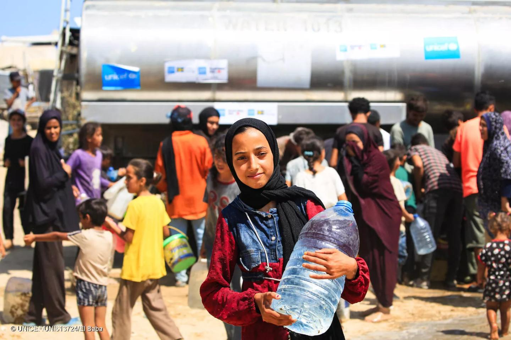
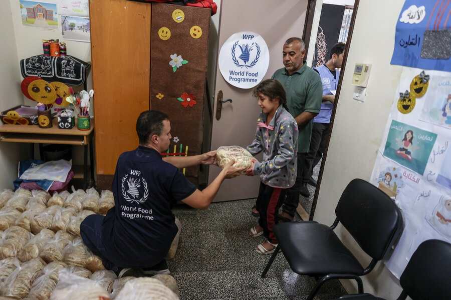
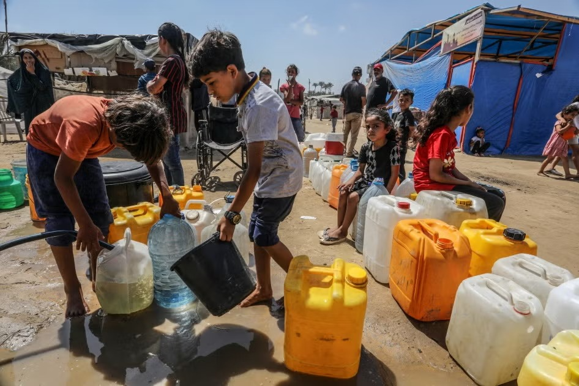
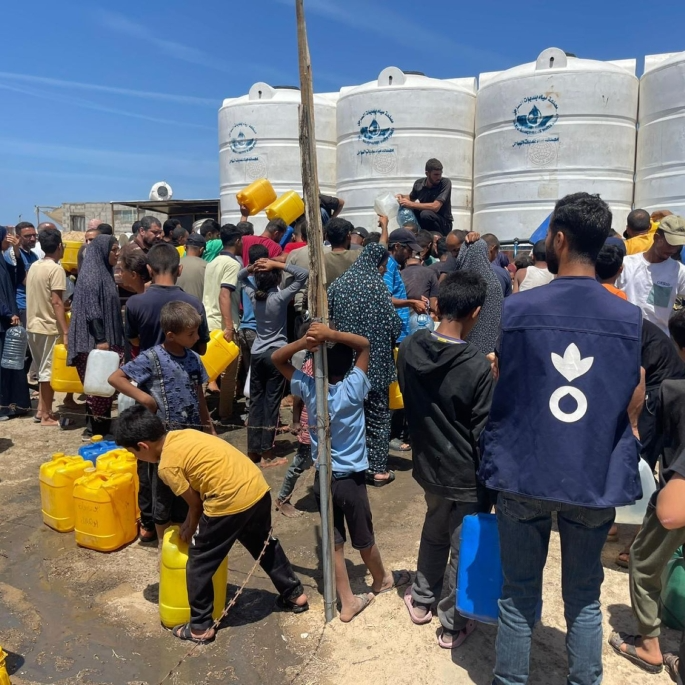
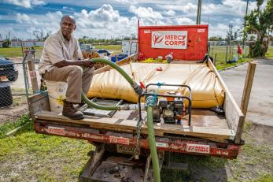
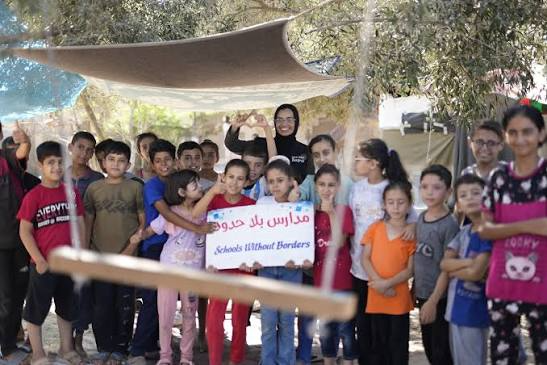

We only suggest trusted, official and verified websites

UNICEF works to protect children and provide essential humanitarian support in the State of Palestine, including healthcare, clean water, nutrition, education, and child protection.
https://www.unicef.org/sop/
WFP provides food assistance and humanitarian support to people affected by conflict and food insecurity in Palestine, including emergency assistance in Gaza.
https://www.wfp.org/emergencies/palestine-emergency
The ICRC provides humanitarian assistance and protection to people affected by armed conflict, including medical support, essential supplies, and assistance to vulnerable communities.
https://www.icrc.org/en/donate/israelgaza
Action Against Hunger provides humanitarian assistance to communities affected by crisis, with support focused on food security, nutrition, clean water, sanitation, and emergency needs.
https://www.actionagainsthunger.org/take-action/donate/gaza/
Mercy Corps provides emergency humanitarian assistance to people affected by crisis, supporting communities with essential supplies, basic needs, and recovery assistance.
https://www.mercycorps.org/donate/ceasefire-gaza-donate-now
The International Rescue Committee supports people affected by crisis in Gaza by providing humanitarian assistance, healthcare, protection, emergency support, and other essential services.
https://help.rescue.org/donate/2x-your-impact-families-gaza